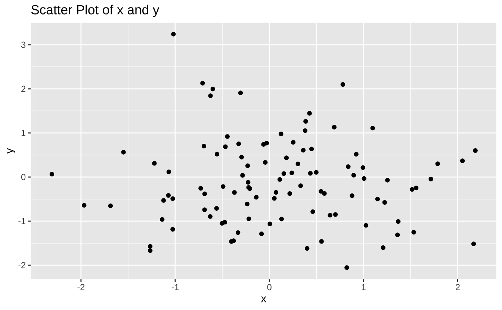
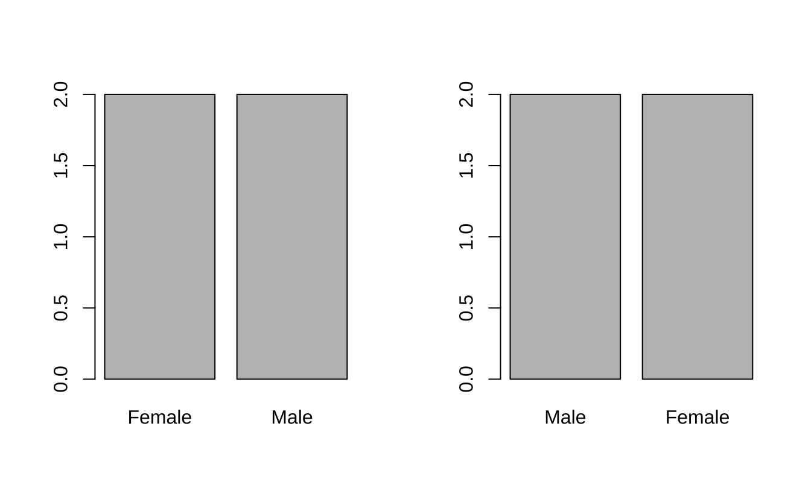
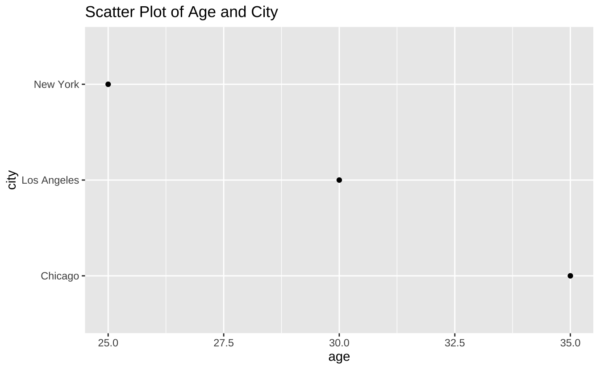
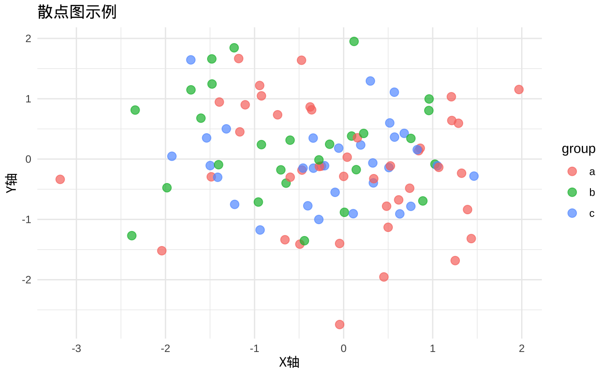
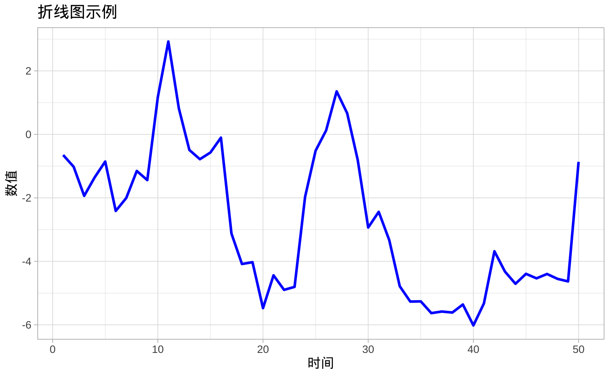
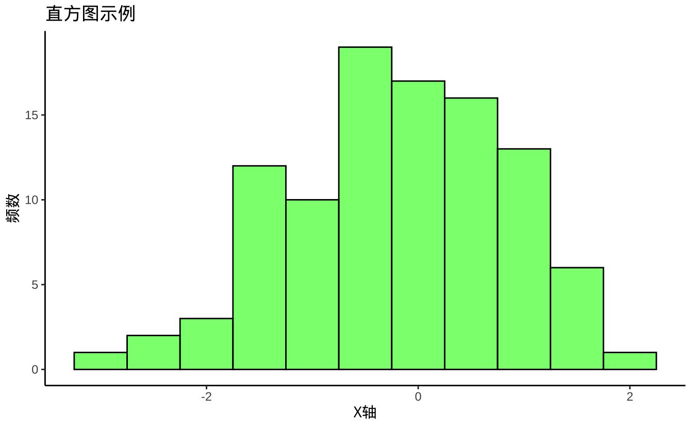
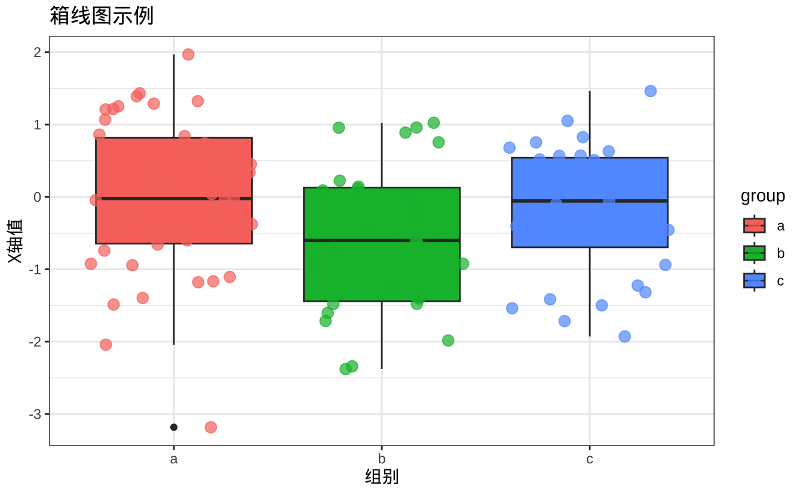

graph TD;
A[数据导入与预处理] --> B[数据清洗与处理];
B --> C[数据探索与可视化];
C --> D[描述性统计分析];
D --> E[多维数据可视化];
E --> F[模型建立与预测分析];
7 R 语言入门
7.1 R语言简介
R语言最初由罗斯·伊哈卡（Ross Ihaka）和罗伯特·詹特尔曼（Robert Gentleman）于1993年开发。它是从S语言演变而来，S语言是一种主要用于数据分析和统计计算的编程语言。R语言的开源特性让它成为数据分析领域的热门选择，逐渐被广泛应用于各个行业，并且因其强大的数据处理和统计分析能力成为数据科学的标准工具之一。
7.1.1 R在数据科学中的长处
R语言在数据科学中的优势在于其高效的数据处理能力和强大的统计分析工具。无论是简单的描述性统计，还是复杂的机器学习模型，R都能够通过简单的语法实现，减少开发者的工作量。此外，R语言的灵活性使得它能够轻松集成到数据科学的各个环节，从数据预处理到模型评估，再到数据可视化，都能够提供高效的解决方案。
丰富的统计与数据分析功能
R语言内置了众多统计分析函数，并且有大量的统计模型和算法包可供使用。无论是回归分析、时间序列分析、聚类分析，还是假设检验，R都提供了丰富的工具。同时，R语言的灵活性和可扩展性使得用户能够通过自定义函数满足特殊的统计分析需求。
强大的数据可视化能力
R语言的可视化能力在数据科学中占据了重要地位。通过ggplot2等包，R可以生成各种高质量的图表，如散点图、直方图、箱线图等，帮助用户更好地理解数据的分布与关系。此外，R的图形定制能力非常强，可以精细化调整每个图表元素，满足不同场合的展示需求。
- 广泛的社区支持与软件包生态
R语言的开源社区非常活跃，全球有大量的开发者和数据科学家参与到R语言的开发和优化中。这使得R拥有丰富的软件包生态系统，涵盖了从数据清洗、分析、建模到可视化的方方面面。R的包管理系统（如CRAN）使得用户可以方便地获取、安装和更新这些包，从而极大地提高了开发效率。
7.1.2 R语言数据分析示例
数据分析通常会有一个流程，如下：
- 数据导入与预处理：R 语言可以通过
read.csv()、read_excel()等函数，轻松读取不同格式的数据文件，导入到R的工作环境中。 - 数据清洗与处理：R 提供了多种方法来识别和处理缺失值，例如使用
is.na()函数检查缺失数据，并通过删除或填充等方式进行处理。此外，dplyr和tidyr包提供了许多便捷的函数，帮助用户清洗和转换数据。 - 数据探索与可视化：R 提供了丰富的可视化工具，特别是
ggplot2，可以帮助用户快速绘制各种图表，探索数据的分布、趋势和关联。 - 描述性统计分析：描述性统计是对数据的基本总结，通过均值、标准差、频率等统计量帮助分析数据的集中趋势与离散程度。在R中，可以使用
summary()、mean()、sd()等函数进行描述性统计分析，也可以利用统计分析确定数据分布是否符合正态性。 - 多维数据可视化：针对与多维数据，可以借助于坐标分析方法对差异进行可视化。通过绘制散点图矩阵、热图等，用户可以直观地查看不同变量之间的关系和数据结构。
- 模型建立与预测分析：在 R 中，使用
lm()、glm()等函数可以轻松实现线性回归分析。通过回归模型，可以预测一个变量与另一个或者多个变量之间的关系，并进行趋势分析。
下面给出一个简单的案例展示这一过程。
# 加载必要的库
library(dplyr) # 用于数据处理
library(ggplot2) # 用于数据可视化
library(caret) # 用于机器学习模型
# 生成一个示例数据框
set.seed(123) # 设置随机种子以确保结果可重复
data <- data.frame(
x = rnorm(100), # 生成100个服从正态分布的随机数
y = rnorm(100) # 生成100个服从正态分布的随机数
)
# 数据预处理：计算描述性统计
summary_stats <- data %>%
summarise(
mean_x = mean(x), # 计算x的均值
mean_y = mean(y), # 计算y的均值
sd_x = sd(x), # 计算x的标准差
sd_y = sd(y) # 计算y的标准差
)
# 打印描述性统计结果
print(summary_stats) mean_x mean_y sd_x sd_y
1 0.09040591 -0.1075468 0.9128159 0.9669866加载库：首先，我们加载了
dplyr、ggplot2和caret库。dplyr用于数据处理，ggplot2用于数据可视化，而caret用于机器学习模型的训练和评估。生成数据：使用
set.seed(123)确保随机数生成的可重复性。然后，我们创建了一个数据框data，其中包含两个变量x和y，每个变量由100个服从正态分布的随机数组成。数据预处理：通过
dplyr的summarise函数计算数据的描述性统计，包括均值和标准差。这些统计量帮助我们了解数据的基本特征。
# 数据可视化：绘制散点图
ggplot(data, aes(x = x, y = y)) +
geom_point() + # 添加散点图层
labs(title = "Scatter Plot of x and y", x = "x", y = "y") # 添加标题和轴标签
- 数据可视化：使用
ggplot2绘制x和y的散点图。geom_point()函数用于添加散点图层，labs()函数用于设置图表的标题和轴标签。
# 机器学习模型：线性回归
model <- train(y ~ x, data = data, method = "lm") # 使用线性回归模型拟合数据
# 打印模型结果
print(model)Linear Regression
100 samples
1 predictor
No pre-processing
Resampling: Bootstrapped (25 reps)
Summary of sample sizes: 100, 100, 100, 100, 100, 100, ...
Resampling results:
RMSE Rsquared MAE
0.9480047 0.01907853 0.7481421
Tuning parameter 'intercept' was held constant at a value of TRUE- 机器学习模型：使用
caret包中的train函数进行线性回归模型的训练。y ~ x表示我们要预测y，data = data指定使用的数据集，method = "lm"表示使用线性回归方法。
# 模型评估：查看模型的摘要
summary(model$finalModel) # 打印线性回归模型的详细摘要
Call:
lm(formula = .outcome ~ ., data = dat)
Residuals:
Min 1Q Median 3Q Max
-1.9073 -0.6835 -0.0875 0.5806 3.2904
Coefficients:
Estimate Std. Error t value Pr(>|t|)
(Intercept) -0.10280 0.09755 -1.054 0.295
x -0.05247 0.10688 -0.491 0.625
Residual standard error: 0.9707 on 98 degrees of freedom
Multiple R-squared: 0.002453, Adjusted R-squared: -0.007726
F-statistic: 0.241 on 1 and 98 DF, p-value: 0.6246- 模型评估：通过
summary(model$finalModel)查看线性回归模型的详细摘要，包括系数、R平方值等。这些信息帮助我们评估模型的性能和拟合情况。
整个过程展示了R语言在数据科学中的应用，从数据生成、预处理、可视化到模型训练和评估，体现了其高效的数据处理能力和强大的统计分析工具。
7.2 基本概念与操作
7.2.1 数据类型与数据结构
7.2.1.1 向量、矩阵与数组
R语言的基本数据类型包括数值、字符、逻辑等，而这些基本类型可以组成更复杂的数据结构。向量是R中最常用的数据结构，它是一种具有相同数据类型的元素集合。矩阵则是二维的向量，所有元素都是相同类型的。数组可以是多维的矩阵，适用于更复杂的结构化数据。
# 创建一个数值向量
numeric_vector <- c(1, 2, 3, 4, 5) # 使用c()函数创建一个包含数值的向量
# 创建一个字符向量
character_vector <- c("a", "b", "c", "d") # 使用c()函数创建一个包含字符的向量
# 创建一个逻辑向量
logical_vector <- c(TRUE, FALSE, TRUE, FALSE) # 使用c()函数创建一个包含逻辑值的向量
# 创建一个矩阵
matrix_example <- matrix(1:9, nrow = 3, ncol = 3) # 使用matrix()函数创建一个3x3的矩阵，元素为1到9
# 创建一个三维数组
array_example <- array(1:24, dim = c(3, 4, 2)) # 使用array()函数创建一个3x4x2的三维数组，元素为1到24- 向量是R中最基本的数据结构，可以通过
c()函数创建。向量中的所有元素必须是相同的数据类型。在上述代码中，我们创建了数值、字符和逻辑向量。
# 打印向量
print(numeric_vector)[1] 1 2 3 4 5print(character_vector)[1] "a" "b" "c" "d"print(logical_vector)[1] TRUE FALSE TRUE FALSE- 矩阵是二维的向量，所有元素也必须是相同的数据类型。可以使用
matrix()函数创建矩阵，指定行数nrow和列数ncol。在示例中，我们创建了一个3x3的矩阵，元素为1到9。
# 打印矩阵
print(matrix_example) [,1] [,2] [,3]
[1,] 1 4 7
[2,] 2 5 8
[3,] 3 6 9- 数组是多维的矩阵，适用于更复杂的数据结构。可以使用
array()函数创建数组，并通过dim参数指定每个维度的大小。在示例中，我们创建了一个3x4x2的三维数组，元素为1到24。
# 打印数组
print(array_example), , 1
[,1] [,2] [,3] [,4]
[1,] 1 4 7 10
[2,] 2 5 8 11
[3,] 3 6 9 12
, , 2
[,1] [,2] [,3] [,4]
[1,] 13 16 19 22
[2,] 14 17 20 23
[3,] 15 18 21 247.2.1.2 数据框与列表
数据框是 R 中最常见的数据结构之一，它类似于数据库中的表格，由不同类型的列组成，可以包含数值、字符、因子等不同类型的数据。列表则是一种更灵活的结构，允许不同类型的数据按顺序存储，其中的元素可以是任何类型的对象，包括向量、数据框、函数等。
# 创建一个数据框
data_frame <- data.frame(
name = c("Alice", "Bob", "Charlie"),
age = c(25, 30, 35),
city = c("New York", "Los Angeles", "Chicago")
)
# 创建一个列表
list_example <- list(
numeric_vector = numeric_vector,
matrix_example = matrix_example,
data_frame = data_frame
)- 数据框是R中最常见的数据结构之一，它类似于数据库中的表格，由不同类型的列组成，可以包含数值、字符、因子等不同类型的数据。在示例中，我们创建了一个包含姓名、年龄和城市的数据框。
# 打印数据框
print(data_frame) name age city
1 Alice 25 New York
2 Bob 30 Los Angeles
3 Charlie 35 Chicago- 列表则是一种更灵活的结构，允许不同类型的数据按顺序存储，其中的元素可以是任何类型的对象，包括向量、数据框、函数等。在示例中，我们创建了一个包含数值向量、矩阵和数据框的列表。
# 打印列表
print(list_example)$numeric_vector
[1] 1 2 3 4 5
$matrix_example
[,1] [,2] [,3]
[1,] 1 4 7
[2,] 2 5 8
[3,] 3 6 9
$data_frame
name age city
1 Alice 25 New York
2 Bob 30 Los Angeles
3 Charlie 35 Chicago# 打印列表的元素
print(list_example$numeric_vector) # 打印数值向量[1] 1 2 3 4 5print(list_example$matrix_example) # 打印矩阵 [,1] [,2] [,3]
[1,] 1 4 7
[2,] 2 5 8
[3,] 3 6 9print(list_example$data_frame) # 打印数据框 name age city
1 Alice 25 New York
2 Bob 30 Los Angeles
3 Charlie 35 Chicago7.2.1.3 因子与日期时间
因子是R中专门用于表示分类数据的一种数据类型，通常用于处理分类变量，如性别、地区等。日期时间类型则用于存储和处理时间相关的数据，R提供了多种日期时间类型，如Date和POSIXt类型，帮助用户进行时间序列分析和操作。
# 创建一个因子
factor_example <- factor(c("Male", "Female", "Male", "Female"))
# 打印因子
print(factor_example)[1] Male Female Male Female
Levels: Female Male- 因子是R中专门用于表示分类数据的一种数据类型，通常用于处理分类变量，如性别、地区等。在示例中，我们创建了一个包含性别信息的因子。
因子在绘图时，会自动将分类变量转换为离散的值，从而方便进行可视化。
# 设置绘图参数
par(mfrow = c(1, 2))
# 打印因子
plot(factor_example)
# 设置因子水平
factor_example <- factor(factor_example, levels = c("Male", "Female"))
# 打印因子
plot(factor_example)
- 日期时间类型则用于存储和处理时间相关的数据，R提供了多种日期时间类型，如Date和POSIXt类型，帮助用户进行时间序列分析和操作。在示例中，我们创建了一个包含日期时间的因子。
# 创建一个日期时间向量
date_time_vector <- as.POSIXct(c("2024-01-01 12:00:00", "2024-01-01 13:00:00", "2024-01-01 14:00:00"))
# 打印日期时间向量
print(date_time_vector)[1] "2024-01-01 12:00:00 CST" "2024-01-01 13:00:00 CST"
[3] "2024-01-01 14:00:00 CST"7.3 基本语法与操作
7.3.1 变量赋值与运算符
R语言的变量赋值通常使用<-符号，但也可以使用=进行赋值。运算符包括常见的数学运算符（如加法+、减法-、乘法*等），还包括逻辑运算符（如&、|等）和关系运算符（如==、!=、>、<等），这些运算符在R语言中可以广泛应用于不同的数据结构和分析任务。
# 创建一个变量
x <- 10
# 打印变量
print(x)[1] 10# 使用=进行赋值
y = 20
# 打印变量
print(y)[1] 20# 使用==进行比较
print(x == y) [1] FALSE# 使用!=进行不等于比较
print(x != y)[1] TRUE# 使用>进行大于比较
print(x > y) [1] FALSE# 使用<进行小于比较
print(x < y)[1] TRUE# 使用>=进行大于等于比较
print(x >= y) [1] FALSE# 使用&&进行逻辑与运算
print(x && y)[1] TRUE# 使用||进行逻辑或运算
print(x || y) [1] TRUE7.3.1.1 控制结构（条件判断与循环）
R语言的控制结构包括条件判断（如if、else）和循环（如for、while）。这些结构让我们能够根据不同的条件执行不同的代码，或者重复执行某些任务。条件判断帮助程序根据输入数据的不同决定是否执行某些操作，而循环则在需要多次执行同一任务时非常有用。
# 创建一个变量
x <- 10
# 使用if进行条件判断
if (x > 0) {
print("x is positive")
} else {
print("x is negative")
}[1] "x is positive"- 条件判断帮助程序根据输入数据的不同决定是否执行某些操作。在示例中，我们创建了一个变量
x，并使用if进行条件判断。如果x大于0，则打印“x is positive”，否则打印“x is negative”。
# 使用if进行条件判断
if (x > 0) {
print("x is positive")
} else {
print("x is negative")
} [1] "x is positive"- 循环则用于重复执行某些任务。在示例中，我们使用
for循环打印了1到5的数字。
# 使用for循环打印1到5的数字
for (i in 1:5) {
print(i)
}[1] 1
[1] 2
[1] 3
[1] 4
[1] 57.3.1.2 函数定义与调用
R语言中的函数定义非常简洁，可以使用function()关键字定义函数，并通过函数名来调用。函数可以有输入参数，也可以有返回值。通过函数的定义与调用，用户可以将复杂的计算逻辑封装成模块化的代码，提高代码的可重用性和可维护性。
# 定义一个简单的函数
my_function <- function(x) {
return(x + 1)
}- 函数定义非常简洁，可以使用
function()关键字定义函数，并通过函数名来调用。在示例中，我们定义了一个简单的函数my_function，它接受一个参数x，并返回x + 1。
# 调用函数
print(my_function(1))[1] 2- 函数可以有输入参数，也可以有返回值。在示例中，我们定义了一个简单的函数
my_function，它接受一个参数x，并返回x + 1。
# 调用函数
print(my_function(1))[1] 27.4 数据分析软件包介绍
该部分介绍在数据分析中最常用到的几个软件包。
7.4.1 dplyr包
dplyr 包是 R 语言中一个非常流行的数据处理包，提供了简洁的语法来进行数据的筛选与过滤。
7.4.1.1 数据筛选与过滤
例如，使用filter()函数可以根据条件筛选数据，select()函数可以选择数据框中的某些列，mutate()函数可以添加新的列。这些功能使得数据的清洗和处理变得非常简单高效。
# 创建一个数据框
data_frame <- data.frame(
name = c("Alice", "Bob", "Charlie"),
age = c(25, 30, 35),
city = c("New York", "Los Angeles", "Chicago")
)
# 使用filter()函数筛选数据
filtered_data <- filter(data_frame, age > 30)
# 打印筛选后的数据
print(filtered_data) name age city
1 Charlie 35 Chicago- dplyr包提供了简洁的语法来进行数据的筛选与过滤。例如，使用
filter()函数可以根据条件筛选数据，select()函数可以选择数据框中的某些列，mutate()函数可以添加新的列。这些功能使得数据的清洗和处理变得非常简单高效。
7.4.1.2 数据排序与汇总
通过dplyr包，用户可以方便地对数据进行排序（arrange()）以及汇总（summarize()）。排序可以按某一列的值进行升序或降序排列，而汇总则能够基于某些分组进行求和、均值计算等操作。
# 创建一个数据框
data_frame <- data.frame(
name = c("Alice", "Bob", "Charlie"),
age = c(25, 30, 35),
city = c("New York", "Los Angeles", "Chicago")
)
# 使用arrange()函数对数据进行排序
sorted_data <- arrange(data_frame, age)
# 打印排序后的数据
print(sorted_data) name age city
1 Alice 25 New York
2 Bob 30 Los Angeles
3 Charlie 35 Chicago- 通过dplyr包，用户可以方便地对数据进行排序（
arrange()）以及汇总（summarize()）。排序可以按某一列的值进行升序或降序排列，而汇总则能够基于某些分组进行求和、均值计算等操作。
# 使用summarize()函数对数据进行汇总
summarized_data <- summarize(data_frame, mean_age = mean(age))
# 打印汇总后的数据
print(summarized_data) mean_age
1 307.4.2 ggplot2包
7.4.2.1 图形语法概述
ggplot2包基于“语法图形”理论，允许用户通过层次化的方式创建图形。一个ggplot图表通常由数据、映射、几何对象、统计变换、坐标系统和主题组成。用户可以通过简单的代码来定义各个元素，使得图形的创建既直观又灵活。
# 创建一个数据框
data_frame <- data.frame(
name = c("Alice", "Bob", "Charlie"),
age = c(25, 30, 35),
city = c("New York", "Los Angeles", "Chicago")
)
# 使用ggplot2包创建一个散点图
ggplot(data_frame, aes(x = age, y = city)) +
geom_point() +
labs(title = "Scatter Plot of Age and City")
- ggplot2包基于“语法图形”理论，允许用户通过层次化的方式创建图形。一个ggplot图表通常由数据、映射、几何对象、统计变换、坐标系统和主题组成。用户可以通过简单的代码来定义各个元素，使得图形的创建既直观又灵活。
7.4.2.2 常见图表类型
ggplot2支持多种常见的图表类型，如散点图、折线图、直方图、箱线图等。每种图表类型都可以通过改变不同的参数进行调整，满足不同的展示需求。
# 加载ggplot2包，用于数据可视化
library(ggplot2) # 导入ggplot2库
# 创建示例数据集，包括x、y两个变量和一个分组变量group
data <- data.frame(
x = rnorm(100), # 生成100个服从正态分布的随机数作为x轴数据
y = rnorm(100), # 生成100个服从正态分布的随机数作为y轴数据
group = sample(letters[1:3], 100, replace = TRUE) # 随机生成100个属于a、b、c三个组的分组数据
)- 加载与准备数据
- 首先使用
library(ggplot2)加载ggplot2包，这是R中非常流行的用于数据可视化的包。
- 通过
data.frame函数创建了一个数据集，其中包括两个数值变量x和y，以及一个字符型变量group。x和y分别使用rnorm(100)生成100个正态分布的随机数；group则利用sample从字母 a、b、c 中随机抽取分组信息，模拟数据分组场景。
- 首先使用
# ---------------------------
# 散点图示例：展示x和y之间的关系，并根据group分组上色
# ---------------------------
scatter_plot <- ggplot(data, aes(x = x, y = y, color = group)) + # 设置数据源及映射关系（x、y坐标和颜色对应分组）
geom_point(size = 3, alpha = 0.7) + # 添加散点图层，设置点的大小为3，透明度为0.7
labs(title = "散点图示例", x = "X轴", y = "Y轴") + # 添加图形标题和坐标轴标签
theme_minimal() # 应用简洁的主题
print(scatter_plot) # 绘制散点图
- 散点图（Scatter Plot）
- 使用
ggplot(data, aes(x = x, y = y, color = group))设置数据源和美学映射，其中x和y分别代表横轴和纵轴，color = group根据分组变量赋予不同颜色。
geom_point(size = 3, alpha = 0.7)添加散点图层，设置点的大小和透明度，帮助提高视觉效果。
labs函数用来添加图表标题和坐标轴标签；theme_minimal()应用了一个简洁的主题。
- 最后，
print(scatter_plot)用于在图形设备上输出该图。
- 使用
# ---------------------------
# 折线图示例：展示随时间变化的数据趋势
# ---------------------------
# 创建时间序列数据，time为时间变量，value为累积随机值模拟趋势数据
time_data <- data.frame(
time = 1:50, # 创建一个从1到50的时间序列
value = cumsum(rnorm(50)) # 生成50个随机数并计算累积和，模拟数据趋势
)
line_plot <- ggplot(time_data, aes(x = time, y = value)) + # 设置数据源及映射关系（时间与数值）
geom_line(color = "blue", size = 1) + # 添加折线图层，设置线条颜色为蓝色，宽度为1
labs(title = "折线图示例", x = "时间", y = "数值") + # 添加图形标题和坐标轴标签
theme_light() # 应用明亮主题
print(line_plot) # 绘制折线图
- 折线图（Line Chart）
- 构造一个时间序列数据集
time_data，其中time表示时间变量，value是累积和模拟的数值趋势（利用cumsum和rnorm生成）。
- 在
ggplot中映射时间和数值变量，geom_line(color = "blue", size = 1)用于绘制折线图，并设置线条的颜色和宽度。
- 同样通过
labs添加标题和轴标签，并使用theme_light()设置主题。
- 最后，通过
print(line_plot)输出折线图。
- 构造一个时间序列数据集
# ---------------------------
# 直方图示例：展示x变量的分布情况
# ---------------------------
histogram_plot <- ggplot(data, aes(x = x)) + # 设置数据源及映射关系（x轴数据）
geom_histogram(binwidth = 0.5, fill = "green", color = "black", alpha = 0.6) +
# 添加直方图图层，设置每个柱子的宽度为0.5，填充颜色为绿色，边框为黑色，透明度为0.6
labs(title = "直方图示例", x = "X轴", y = "频数") + # 添加图形标题和坐标轴标签
theme_classic() # 应用经典主题
print(histogram_plot) # 绘制直方图
- 直方图（Histogram）
- 利用同一数据集
data中的x变量创建直方图，通过aes(x = x)映射x轴数据。
geom_histogram(binwidth = 0.5, fill = "green", color = "black", alpha = 0.6)绘制直方图，其中binwidth控制每个柱子的宽度，fill和color设置柱子的填充和边框颜色，alpha控制透明度。
- 添加必要的标题和标签后，使用
theme_classic()设定图形风格，并通过print(histogram_plot)输出直方图。
- 利用同一数据集
# ---------------------------
# 箱线图示例：比较不同组别中x变量的分布情况
# ---------------------------
boxplot <- ggplot(data, aes(x = group, y = x, fill = group)) + # 设置数据源及映射关系（组别作为x轴，x变量作为y轴，同时填充颜色依组别变化）
geom_boxplot() + # 添加箱线图图层
labs(title = "箱线图示例", x = "组别", y = "X轴值") + # 添加图形标题和坐标轴标签
theme_bw() # 应用黑白主题
print(boxplot) # 绘制箱线图- 箱线图（Box Plot）
- 为比较不同分组中
x变量的分布，箱线图将group作为分类变量映射到x轴，x变量映射到y轴，且利用fill = group根据不同组赋予不同填充颜色。
geom_boxplot()添加箱线图层后，通过labs设定图表标题和坐标轴标签。
- 使用
theme_bw()选择黑白风格主题，并调用print(boxplot)输出箱线图。
- 为比较不同分组中
总体来看，这段代码展示了如何利用ggplot2生成不同类型的图表（散点图、折线图、直方图、箱线图），以及如何通过调整参数（如颜色、大小、透明度、bin宽度和主题）来满足不同的数据展示需求。这些图表类型在数据分析和展示中十分常用，能够直观地帮助理解数据的分布、趋势和比较，为数据科学工作提供了强大的视觉支持。
7.4.2.3 图层的叠加
ggplot2允许用户通过图层叠加的方式创建复杂的图表。例如，可以在同一个图表中绘制多个几何对象，或者在同一个图表中添加多个统计变换。
# ---------------------------
# 图层叠加示例：在同一个图表中绘制多个几何对象
# ---------------------------
ggplot(data, aes(x = group, y = x, fill = group)) + # 设置数据源及映射关系（组别作为x轴，x变量作为y轴，同时填充颜色依组别变化）
geom_boxplot() + # 添加箱线图图层
geom_jitter(aes(color = group), size = 3, alpha = 0.7) + # 添加散点图层，设置点的大小为3，透明度为0.7
labs(title = "箱线图示例", x = "组别", y = "X轴值") + # 添加图形标题和坐标轴标签
theme_bw() 
7.4.2.4 图形美化与定制
ggplot2的一个重要特点是图形的美化与定制。用户可以通过theme()函数控制图形的背景、坐标轴、字体等细节，进一步提升图表的可读性和美观性。
7.4.3 stringr包
7.4.3.1 字符串处理基础
stringr包提供了一系列简便的函数来处理字符串数据，包括字符串的切割、拼接、替换等操作。常用的函数包括str_sub()（提取子字符串）、str_c()（字符串拼接）、str_replace()（字符串替换）等。
# 加载stringr包
library(stringr)
# 定义一个示例字符串
text = "Hello, R language!"
# 使用str_sub()提取子字符串，提取从8到9的字符
sub_text = str_sub(text, 8, 9) # "R "
# 使用str_c()拼接字符串
new_text = str_c(text, " It's powerful!") # "Hello, R language! It's powerful!"
# 使用str_replace()替换字符串中的单词
replaced_text = str_replace(text, "language", "world") # "Hello, R world!"library(stringr): 加载stringr包，以便使用其中的字符串处理函数。text = "Hello, R language!": 定义一个字符串变量text，作为处理对象。str_sub(text, 8, 9):- 提取
text中第 8 到 9 个字符。 - 这里
text从"Hello, R language!"变为"R "（包含空格）。
- 提取
str_c(text, " It's powerful!"):- 拼接
text和" It's powerful!"，形成"Hello, R language! It's powerful!"。 str_c()自动处理字符串合并，不需要使用paste()及其sep参数。
- 拼接
str_replace(text, "language", "world"):- 将
text中的"language"替换为"world"，生成"Hello, R world!"。 str_replace()只替换第一个匹配项（如需全局替换可用str_replace_all()）。
- 将
这些操作展示了 stringr 包在字符串处理中的简洁性和强大功能。
7.4.3.2 模式匹配与替换
stringr包还支持正则表达式的使用，可以进行复杂的模式匹配和替换操作。str_detect()函数可以判断字符串是否符合某个模式，str_replace_all()可以对字符串中的所有匹配项进行替换。
# 加载stringr包
library(stringr)
# 定义一个字符向量
text = c("apple123", "banana456", "cherry789", "date000")
# 使用str_detect()判断哪些字符串包含数字
contains_digit = str_detect(text, "\\d+") # "\\d+"表示匹配一个或多个数字
print(contains_digit) # 输出匹配结果，TRUE表示包含数字，FALSE表示不包含[1] TRUE TRUE TRUE TRUE# 使用str_replace_all()替换所有数字为空字符串
text_no_digits = str_replace_all(text, "\\d+", "") # 将所有数字部分替换为空
print(text_no_digits) # 输出替换后的字符串[1] "apple" "banana" "cherry" "date" - 加载stringr包：
library(stringr)用于加载stringr包，以便使用其提供的字符串操作函数。 - 定义字符向量：
text = c("apple123", "banana456", "cherry789", "date000")创建一个包含多个字符串的向量，每个字符串都含有字母和数字。 str_detect()进行模式匹配：str_detect(text, "\\d+")用于检测text向量中的字符串是否包含数字（\d+表示匹配一个或多个数字）。- 结果是一个逻辑向量，每个元素对应
text中的一个字符串，TRUE表示包含数字，FALSE表示不包含。
str_replace_all()进行全局替换：str_replace_all(text, "\\d+", "")将所有匹配\d+（即所有数字）的部分替换为空字符串""，即删除所有数字。- 结果是一个新的字符向量，所有的数字都被移除，仅保留字母部分。
这样，我们使用str_detect()检测字符串是否包含数字，并用str_replace_all()移除所有数字，实现了正则表达式在字符串匹配和替换中的应用。
7.4.3.3 文本数据清洗
在数据分析中，文本数据往往需要进行清洗与标准化。stringr包提供了丰富的工具，可以去除多余的空格、标点符号，进行大小写转换等，从而保证文本数据的一致性。
# 加载stringr包
library(stringr)
# 示例文本数据
text_data = c(" Hello, World! ", "R is AWESOME!!!", "Data Science & AI")
# 去除前后空格
text_data = str_trim(text_data)
# 转换为小写，确保一致性
text_data = str_to_lower(text_data)
# 去除所有标点符号
text_data = str_replace_all(text_data, "[[:punct:]]", "")
# 规范化多个空格为单个空格
text_data = str_squish(text_data)
# 输出清洗后的文本数据
print(text_data)[1] "hello world" "r is awesome" "data science ai"7.4.4 代码逻辑解释
- 加载
stringr包：提供字符串处理函数。 - 定义文本数据：包含前后空格、大小写混用、多余空格和标点符号。
- 去除前后空格：使用
str_trim()确保文本没有额外的前导和尾随空格。 - 转换为小写：
str_to_lower()保证文本大小写一致，避免因大小写不同而导致数据匹配问题。 - 去除标点符号：
str_replace_all()用正则表达式[[:punct:]]匹配所有标点并替换为空字符串。 - 合并多余空格：
str_squish()将多个连续空格替换为单个空格，保持文本格式整洁。 - 输出结果：清洗后的文本更规范，适用于进一步分析。
7.4.5 tidyr包
7.4.5.1 数据整形与转换
tidyr包提供了方便的数据整形与转换工具，帮助用户将数据从一个格式转换为另一个格式，通常用于将“宽格式数据”转换为“长格式数据”，或者反之。
# 加载tidyr和dplyr包
library(tidyr) # 提供数据整形功能
library(dplyr) # 方便数据操作- 创建“宽格式”数据
wide_data代表一个学生成绩表，每一行是一个学生，每一列代表一个科目及其成绩。
# 创建一个“宽格式”数据框
wide_data = data.frame(
ID = c(1, 2, 3), # 唯一标识
Math = c(90, 85, 88), # 数学成绩
Science = c(80, 78, 95), # 科学成绩
English = c(85, 89, 92) # 英语成绩
)
wide_data ID Math Science English
1 1 90 80 85
2 2 85 78 89
3 3 88 95 92pivot_longer()：宽转长cols = Math:English选取需要转换的列，即各科成绩。
names_to = "Subject"创建一个新列，用于存放原来的列名（学科名称）。
values_to = "Score"创建一个新列，用于存放原来的数据值（成绩）。
- 转换后，每个学生的成绩由多列合并成两列（学科 + 分数），适用于按学科进行分析。
# 使用pivot_longer()将宽格式转换为长格式
long_data = wide_data %>%
pivot_longer(
cols = Math:English, # 需要转换的列（即各科成绩）
names_to = "Subject", # 新列存放原来的列名（学科）
values_to = "Score" # 新列存放原来的数值（成绩）
)
long_data# A tibble: 9 × 3
ID Subject Score
<dbl> <chr> <dbl>
1 1 Math 90
2 1 Science 80
3 1 English 85
4 2 Math 85
5 2 Science 78
6 2 English 89
7 3 Math 88
8 3 Science 95
9 3 English 92pivot_wider()：长转宽names_from = Subject让原本的“学科”值重新变为列名。
values_from = Score让成绩数据回到对应的学科列下。
- 这样数据恢复为原始的“宽格式”，适用于数据可视化或建模。
# 使用pivot_wider()将长格式转换回宽格式
wide_data_again = long_data %>%
pivot_wider(
names_from = Subject, # 重新展开为原来的列名（学科）
values_from = Score # 对应的成绩填充回去
)
wide_data_again# A tibble: 3 × 4
ID Math Science English
<dbl> <dbl> <dbl> <dbl>
1 1 90 80 85
2 2 85 78 89
3 3 88 95 92tidyr中的pivot_longer()和pivot_wider()函数分别用于实现宽表和长表之间的转换，帮助数据分析师根据不同分析需求选择合适的数据格式。
7.4.5.2 数据变换与重组
tidyr 还提供了spread()和gather()等函数，可以帮助用户进行数据的转置和重组。例如，gather()函数可以将宽格式数据转换为长格式数据，而spread()则可以将长格式数据转换为宽格式。
library(tidyr)
# 使用gather()函数将宽格式数据转换为长格式数据
long_data <- gather(data_frame, key = "variable", value = "value", -name)
# 打印转换后的数据
print(long_data) name variable value
1 Alice age 25
2 Bob age 30
3 Charlie age 35
4 Alice city New York
5 Bob city Los Angeles
6 Charlie city Chicago7.4.6 数据检查和清洗
7.4.6.1 缺失值检查
tidyr包提供了complete()函数，可以检查数据中是否存在缺失值，并返回一个包含缺失值的布尔矩阵。
# 创建一个包含缺失值的数据框
data_with_missing = data.frame(
ID = c(1, 2, 3, 4),
Name = c("Alice", "Bob", "Charlie", "David"),
Score = c(95, NA, 88, 92)
)使用 complete() 函数检查缺失值。
# 使用complete()检查缺失值
complete_data = complete(data_with_missing)
print(complete_data) ID Name Score
1 1 Alice 95
2 2 Bob NA
3 3 Charlie 88
4 4 David 92